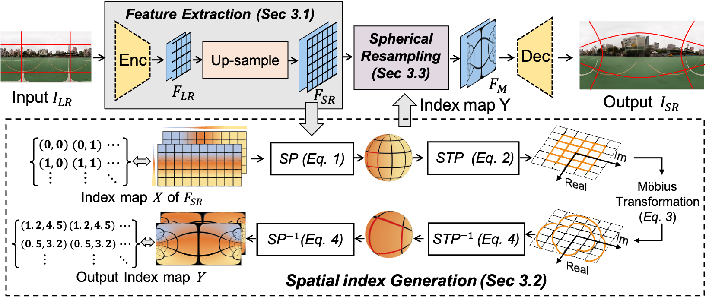
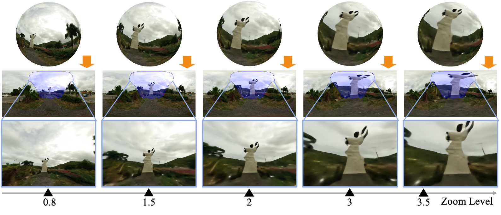

OmniZoomer: Learning to Move and Zoom in on Sphere at High-Resolution
-
Zidong Cao
AI Thrust, HKUST(GZ)
-
Hao Ai
AI Thrust, HKUST(GZ)
-
Yan-Pei Cao
ARC Lab, Tencent PCG
-
Ying Shan
ARC Lab, Tencent PCG
-
Xiaohu Qie
ARC Lab, Tencent PCG
-
Lin Wang
AI Thrust, HKUST(GZ)
Dept. of CSE, HKUST
-

Paper
-

Video
-

Code
-

Vlislab
Abstract
Omnidirectional images (ODIs) have become increasingly popular, as their large field-of-view (FoV) can offer viewers the chance to freely choose the view directions in immersive environments such as virtual reality. The M\"obius transformation is typically employed to further provide the opportunity for movement and zoom on ODIs, but applying it to the image level often results in blurry effect and aliasing problem. In this paper, we propose a novel deep learning-based approach, called \textbf{OmniZoomer}, to incorporate the M\"obius transformation into the network for movement and zoom on ODIs. By learning various transformed feature maps under different conditions, the network is enhanced to handle the increasing edge curvatures, which alleviates the blurry effect. Moreover, to address the aliasing problem, we propose two key components. Firstly, to compensate for the lack of pixels for describing curves, we enhance the feature maps in the high-resolution (HR) space and calculate the transformed index map with a spatial index generation module. Secondly, considering that ODIs are inherently represented in the spherical space, we propose a spherical resampling module that combines the index map and HR feature maps to transform the feature maps for better spherical correlation. The transformed feature maps are decoded to output a zoomed ODI. Experiments show that our method can produce HR and high-quality ODIs with the flexibility to move and zoom in to the object of interest.
Framework
Overall framework of our OmniZoomer.
Visual comparison on continous zoom.
From top to bottom: spherical images predicted from OmniZoomer, equirectangular projection (ERP) from spherical images, and perspective projection from ERP images with a specific field-of-view (FoV), w.r.t. the blue regions. From left to right: increasing zoom levels. Our approach can move to the object of interest, e.g., the sculpture, and freely zoom in and zoom out on omnidirectional images with clear textural details and preserved shapes, even in large zoom levels.
Visual comparison on different image enhancement methods.
From top to bottom: equirectangular projection (ERP) of omnidirectional images, perspective projection from ERP images with a specific field-of-view (FoV), w.r.t. the blue regions, and results from LAU-Net, OmniZoomer and Ground truth (from left to right). From left to right: increasing zoom levels.

Demo
BibTeX
@inproceedings{Cao2023Omn,
title={OmniZoomer: Learning to Move and Zoom in on Sphere at High-Resolution},
author={Z, Cao. H, Ai. and L, Wang.},
booktitle = {IEEE International Conference on Computer Vision (ICCV)},
year={2023}
}